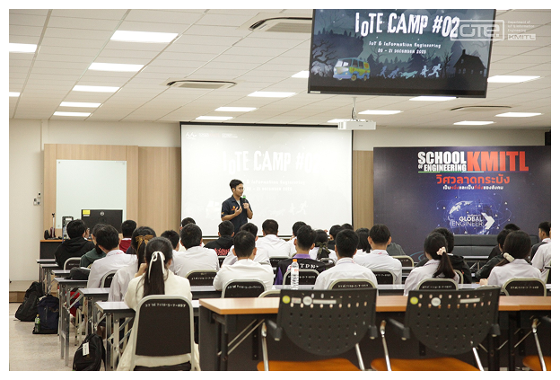

The program is a strategic fit for the country’s targeted “S-Curve” industries—specifically Smart Electronics and the Digital Industry (New S-Curve). It also supports the growth of the Eastern Economic Corridor (EEC), where there is a strong government push and a high demand for specialized graduates in this field.
สำหรับบุตรโดยชอบด้วยกฎหมายของบุคลากรสังกัดสถาบันฯ (สจล.)
เน้นผลการเรียนเฉลี่ยสะสม (GPAX) และคะแนนสอบตามที่คณะกำหนด
การคัดเลือกผ่านระบบ Central Admission (TCAS) โดยใช้คะแนน TGAT/TPAT และ A-Level
